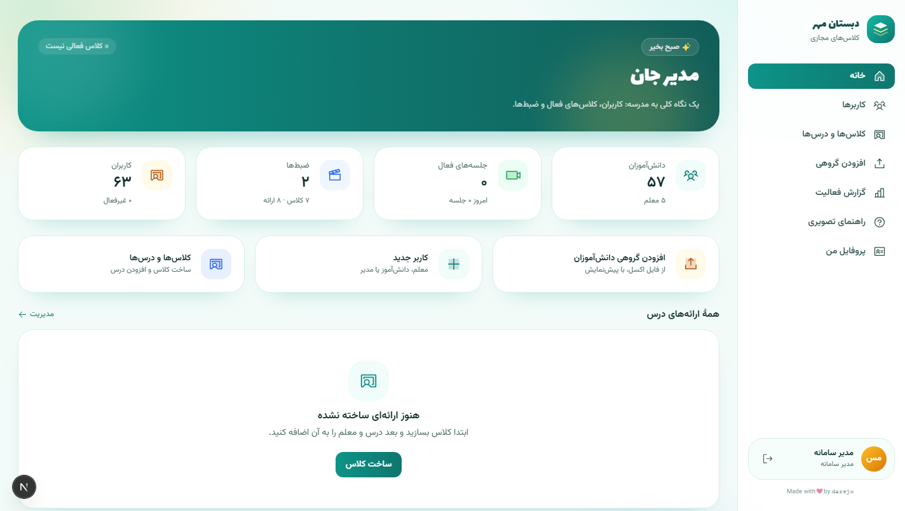
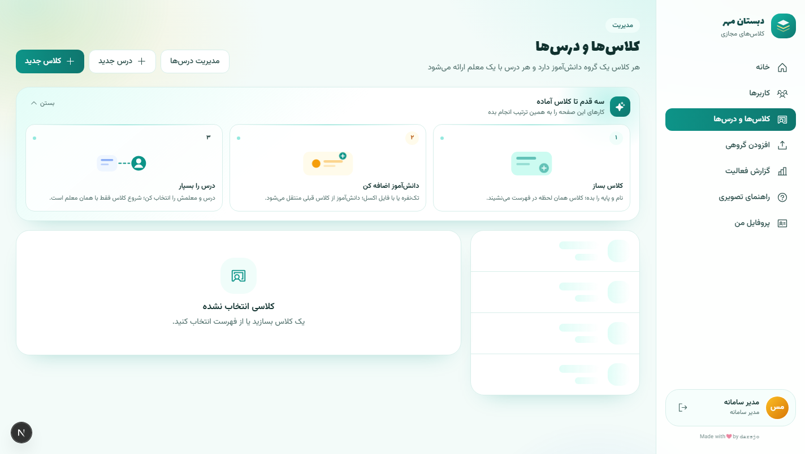
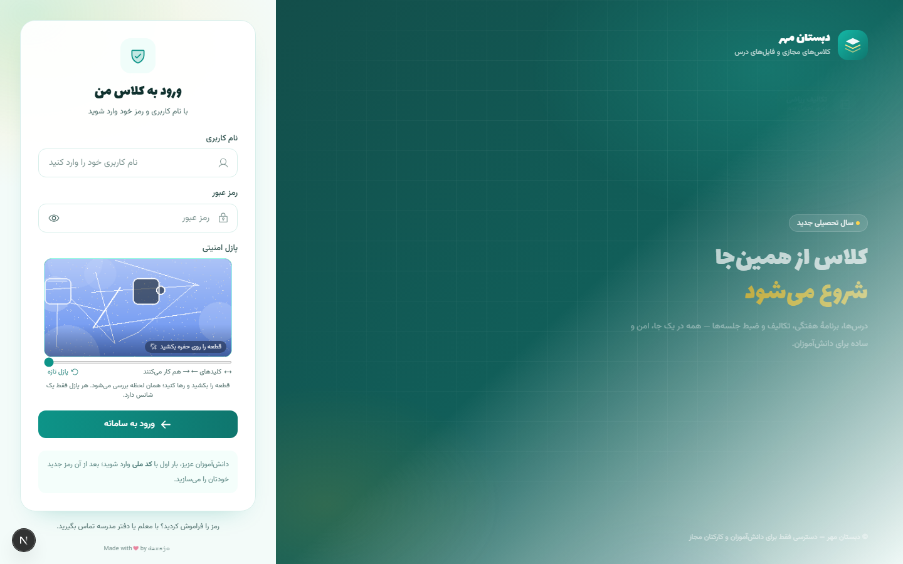
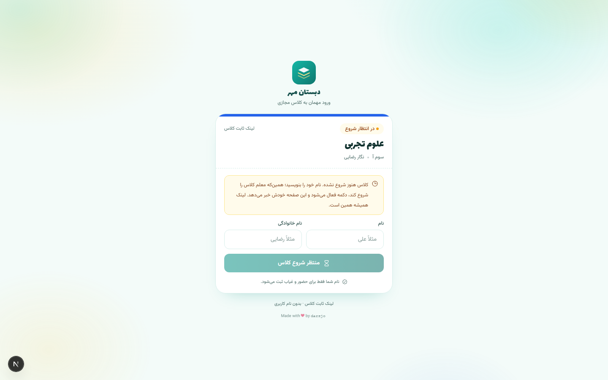
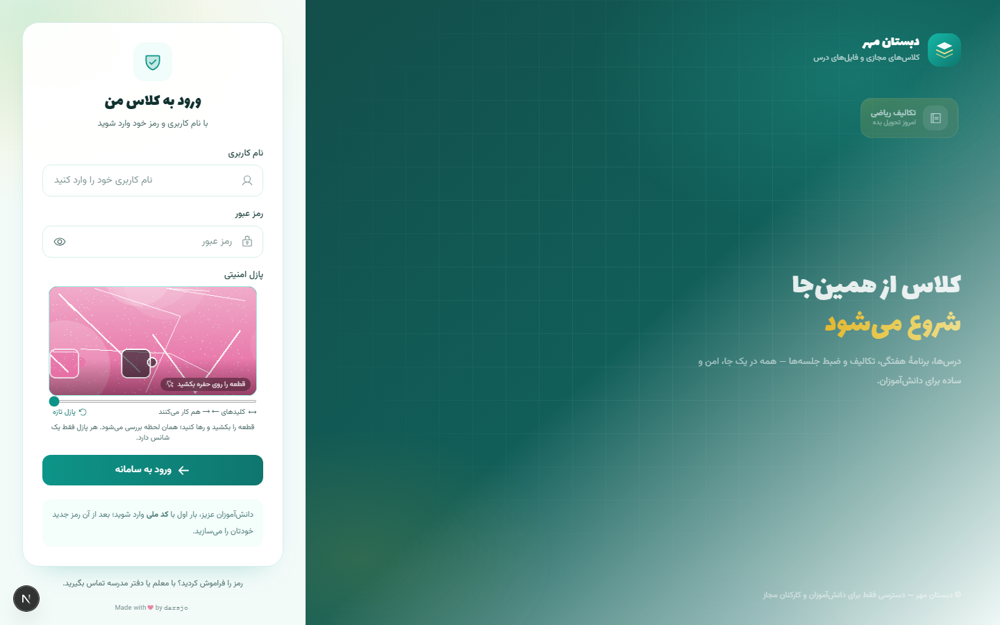
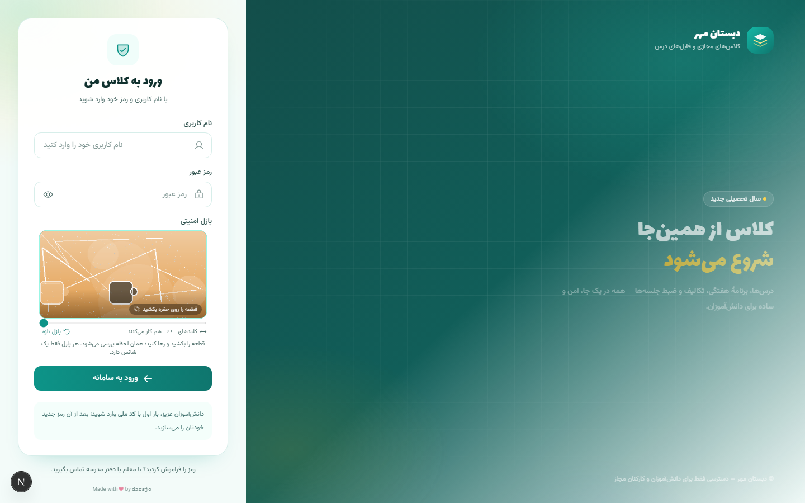
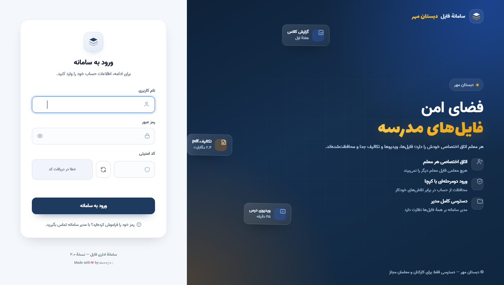

سامانهٔ کلاس آنلاین مدرسه: جلسات تصویری روی BigBlueButton، مدیریت فایل معلمها و صفحهٔ ورود مهمان — همهٔ تصاویر با دادهٔ آزمایشی گرفته شدهاند.
نمای کلی مدرسه: دانشآموزان، معلمها، جلسات در حال برگزاری و ضبطها.

مدیریت کلاسهای سال تحصیلی، درسهای هر کلاس و معلم هر درس.

هر جلسه یک شماره دارد؛ لینک ثابت کلاس، جلسهٔ در حال برگزاری و ضبط جلسههای قبلی همه اینجاست.

دانشآموز با لینک ثابت و بدون حساب کاربری وارد میشود؛ تا شروع کلاس در حالت انتظار میماند.

مدیریت کاربرها، ایمپورت گروهی با اکسل و گزارش فعالیت با ردیفهای ۷ روزه.


پنل جدا با PostgreSQL، کپچای کشیدنی و ایزولاسیون کامل پوشهٔ هر معلم؛ همگام با حساب LMS.
